Kostenloses Material Kunst

Gespensterhaus aus meiner Hand – Halloween-Bastelvorlage mit Lesen und Schreiben, 3-fach differenziert (Klasse 1/2)

Erster Schultag - Schultasche
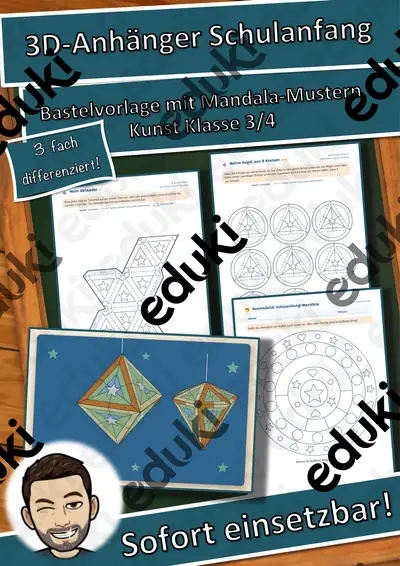
3D-Anhänger Schulanfang – Oktaeder, Diamant und Kugel zum Ausmalen und Basteln, 3-fach differenziert (Klasse 3/4)
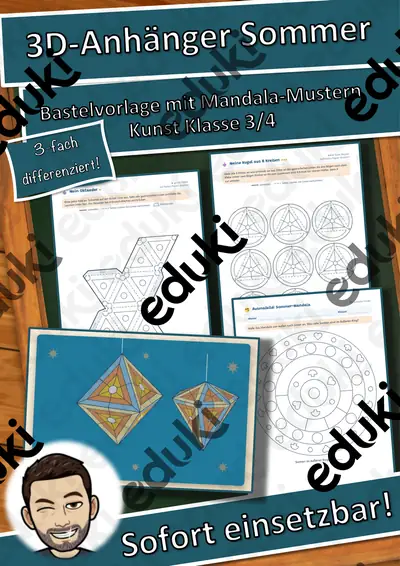
3D-Anhänger Sommer – Oktaeder, Diamant und Kugel zum Ausmalen und Basteln, 3-fach differenziert (Klasse 3/4)
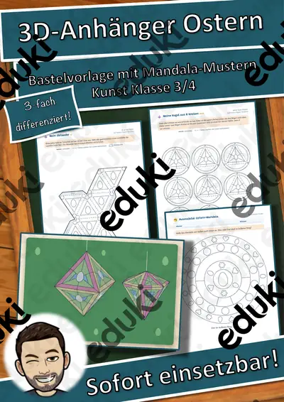
3D-Anhänger Ostern – Oktaeder, Diamant und Kugel zum Ausmalen und Basteln, 3-fach differenziert (Klasse 3/4)

3D-Anhänger Fasching – Oktaeder, Diamant und Kugel zum Ausmalen und Basteln, 3-fach differenziert (Klasse 3/4)

3D-Anhänger Frühling – Oktaeder, Diamant und Kugel zum Ausmalen und Basteln, 3-fach differenziert (Klasse 3/4)

3D-Anhänger Herzen und Muttertag – Oktaeder, Diamant und Kugel zum Ausmalen und Basteln, 3-fach differenziert (Klasse 3/4)
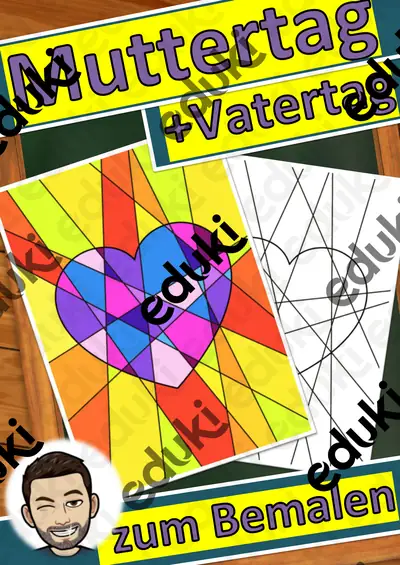
Muttertag, Vatertag - Homeschooling
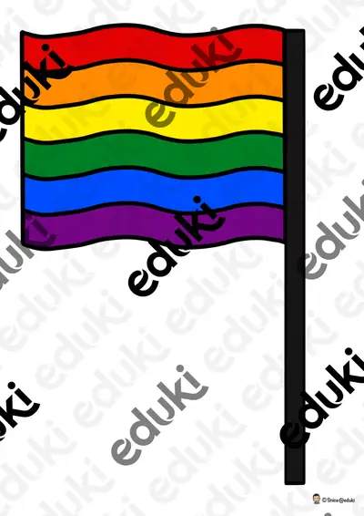
Regenbogenflagge zum Ausmalen und Basteln
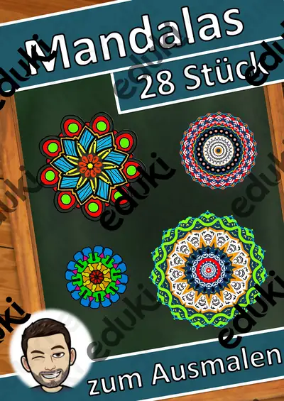
Kunst Mandalas Mandala, Vertretung
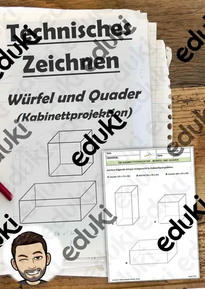
Technisches Zeichnen: Lerntheke zur Kabinettprojektion: 01 Würfel und Quader Zeichnen - Übungsaufgaben inkl. Lösung
Kostenloses Material Fachübergreifendes

Erster Schultag - Schulanfang

Labyrinth: Biene zu Honig - ein Spiel auch für Zuhause

Glückwünsche zum Geburtstag

Magische Worte Tafelmaterial
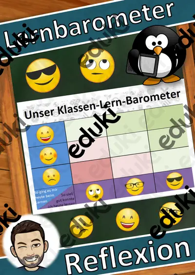
Reflexion: Lernbarometer, Stimmungsbarometer
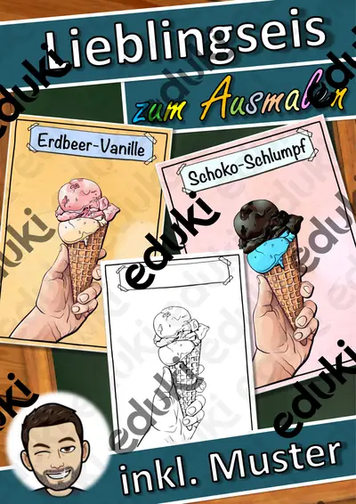
Ausmalbild - Mein Lieblingseis (Sommerferien) - Eis zum Ausmalen
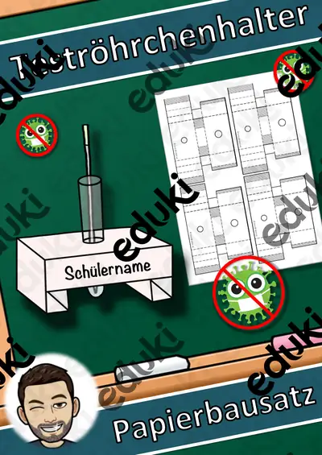
Teströhrchenhalter - Coronatest
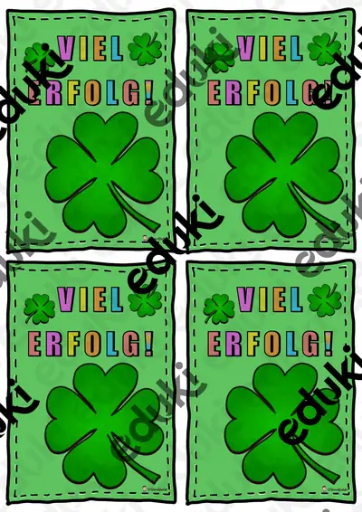
Motivationskärtchen Viel Erfolg (A6)
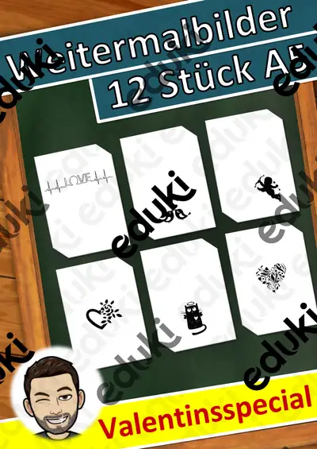
Valentinstag Weitermalbilder
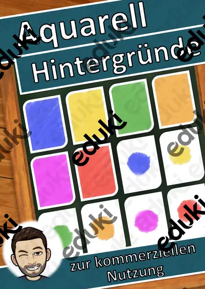
Hintergründe Wasserfarbe (Aquarell Hintergründe)
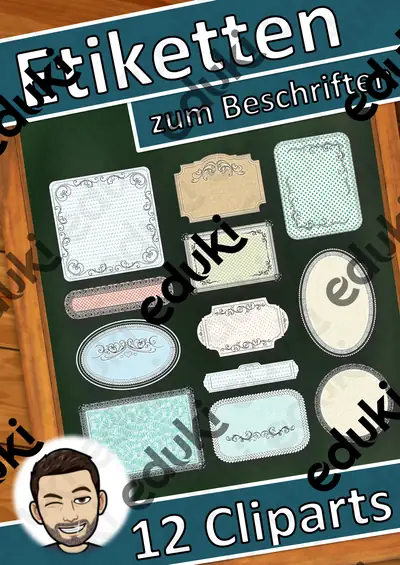
Etiketten als Cliparts
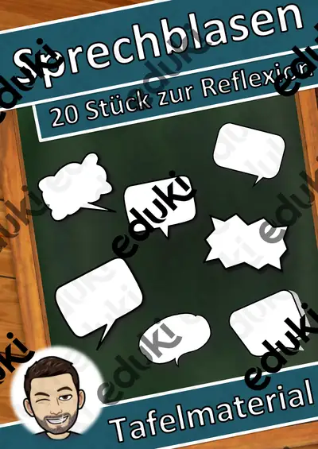
Sprechblasen zur Reflexion oder für eigene Arbeitsblätter (Cliparts Design)
Kostenloses Material Biologie


Kostenloses Material Deutsch


Kostenloses Material Geschichte


Kostenloses Material Wirtschaft
Kostenloses Material Sachunterricht


Kostenloses Material Arbeitslehre
Kostenloses Material Mathematik
Kostenloses Material Religion

Kostenloses Material Digitale Bildung
Kostenloses Material Erdkunde
Kostenloses Material Ethik & Werte und Normen
Kostenlose Arbeitsblätter mit Lösungen
Alle Materialien auf dieser Seite sind fertige PDFs zum Ausdrucken, die du ohne Vorbereitung im Unterricht einsetzen kannst – für die Grundschule genauso wie für die Sekundarstufe. Weitere Materialien findest du in der Materialsuche, bei den Lesespurgeschichten oder nach Saison, z. B. Herbst und Advent & Winter.
Häufige Fragen
Sind die Materialien wirklich kostenlos?
Ja. Auf dieser Seite stehen nur Materialien, die bei der täglichen Aktualisierung auf eduki 0 € kosten. Ändert sich das, verschwindet das Material automatisch von dieser Seite.
Wie lade ich ein Material herunter?
Klick auf das Material: Auf der Detailseite führt dich der Button direkt zum Material auf eduki. Dort startest du den Download.
Sind Lösungen dabei?
Die meisten Materialien enthalten eine Musterlösung. Was genau enthalten ist, steht in der Beschreibung des jeweiligen Materials.
Für welche Klassen gibt es kostenloses Material?
Die Übersicht ist nach Fach gruppiert und innerhalb des Fachs nach Klasse sortiert. Über die Klassen-Filter oben siehst du nur das Material deiner Klassenstufe.